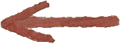

Vinicius
Guimarães é formado em Desenho Industrial
/ Programação Visual pela UFRJ. Apaixonado por futebol,
rock`n roll e tipografia, viu em seu projeto de graduação
a oportunidade de estudar e divulgar um aspecto de sua cidade (São
Gonçalo): a grande presença de letras feitas artesanalmente
no ambiente urbano.

viniguimaraes@terra.com.br
@vini_guimaraes